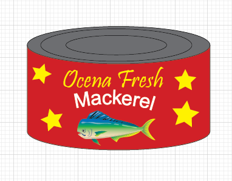

Students will acquire knowledge of desktop publishing and page layout design skills. They will incorporate industry-standard desktop publishing software and graphics software as well as other digital media to create flyers, newsletters, brochures, and other publications. Students will create a portfolio of work during the course.
Students will advance their knowledge and skills in Graphic Design with page layout and photo/image manipulation. Students will create basic computer-generated illustrations using a variety of techniques. Course topics include the ways in which visual messages are used in society, the skills needed by a graphic designer and the potential areas of specialization and employment. Students will continue to create a portfolio of work.
Students will acquire digital literacy skills essential for success in high school, college, and today’s workforce. Emphasis will be on formatting documents and word processing, spreadsheet, and presentation software. The importance and relevance of merging these platforms will be emphasized through the completion of projects. Internet research and electronic communication skills, as well as the ethics related to these skills will be explored.
Gaining advanced knowledge and skills in word processing, spreadsheet, and presentation software will be accentuated. Students will become more familiar with personal information management and electronic security, research, and ethics. This course will explore other applications, including (but not limited to) database management, Web 2.0, and desktop publishing. Integrated projects will be completed to help students relate their learning to real-world and relevant situations.